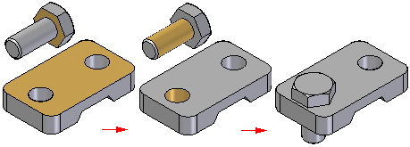
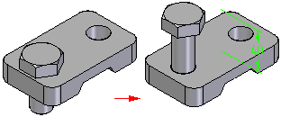
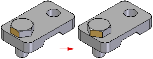

About the Insert relationship
(Home tab→Assemble group→Insert  )
)
The Insert relationship is typically used to place axial-symmetric parts, such as nuts and bolts, into holes or onto cylindrical protrusions. As shown next, the Insert relationship defines a Mate relationship using a fixed offset value and an Axial Align relationship with a fixed rotation angle.

An offset value can be defined for the Mate relationship.

Although the rotation angle of the Axial Align relationship cannot be controlled when the part is placed, it can be edited later. Use the features on the Assemble command bar for the Axial relationship or the Axial Align command bar to edit the Axial Align relationship from Lock Rotation to Unlock Rotation. Another relationship, such as an Angle relationship, can then be applied to control the rotation angle of the part.

How do I
Using the Mate commandModify the offset value for a Mate relationship
Using the Planar Align command
Apply an axial align relationship
Insert a part in an assembly
Apply a connect relationship
Using the Angle command
Using the Tangent command
Place a cam relationship
Apply a path relationship
Using the Parallel command
Apply a gear relationship
Using the Center-Plane command
Place a Rigid Set relationship
Using the Ground command
Update the working environment
Learn more
Assembly Relationships ManagerLook up more details
About the FlashFit relationshipAbout the Mate relationship
About the Planar Align relationship
About the Axial Align relationship
About the Connect relationship
About the Angle relationship
About the Tangent relationship
About the Cam relationship
About the Path relationship
About the Parallel relationship
About the Gear relationship
Position two parts by matching their coordinate systems
About the Match Coordinate Systems relationship
About the Center-Plane relationship
About the Rigid Set relationship
About the Ground relationship
Update Relationships command